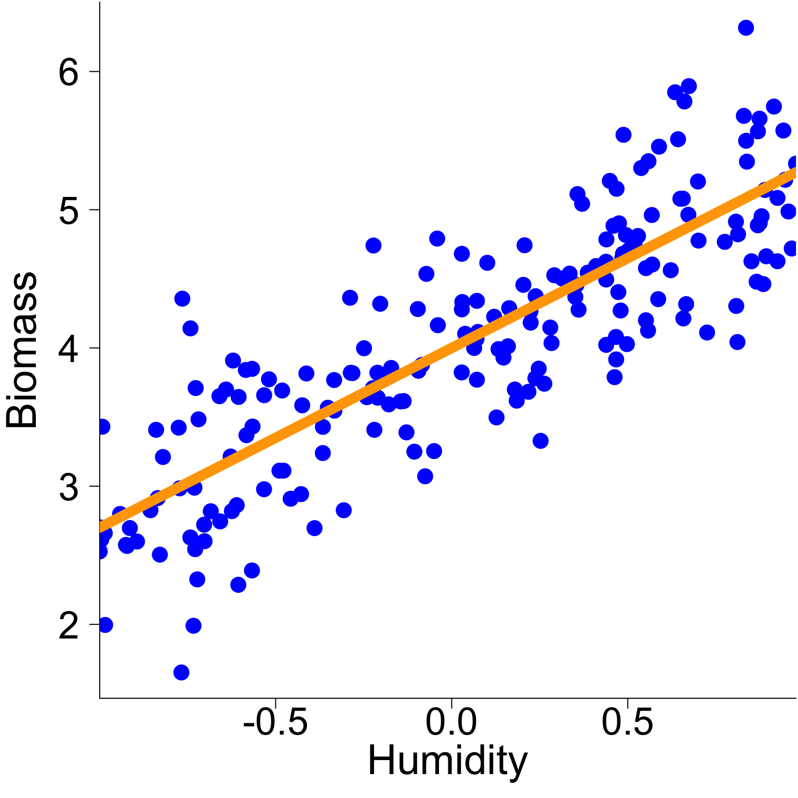
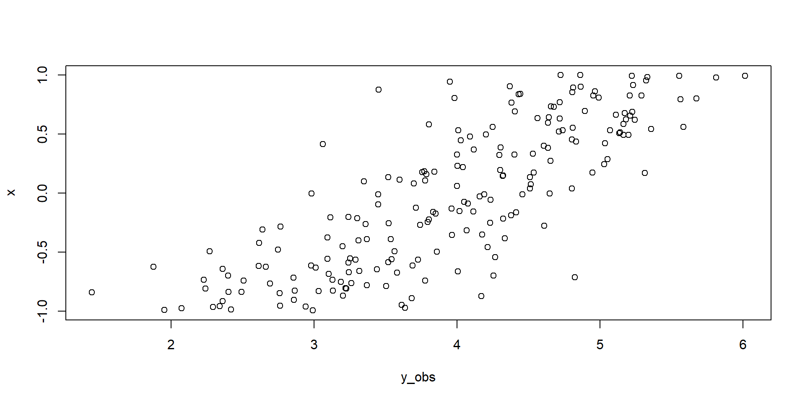
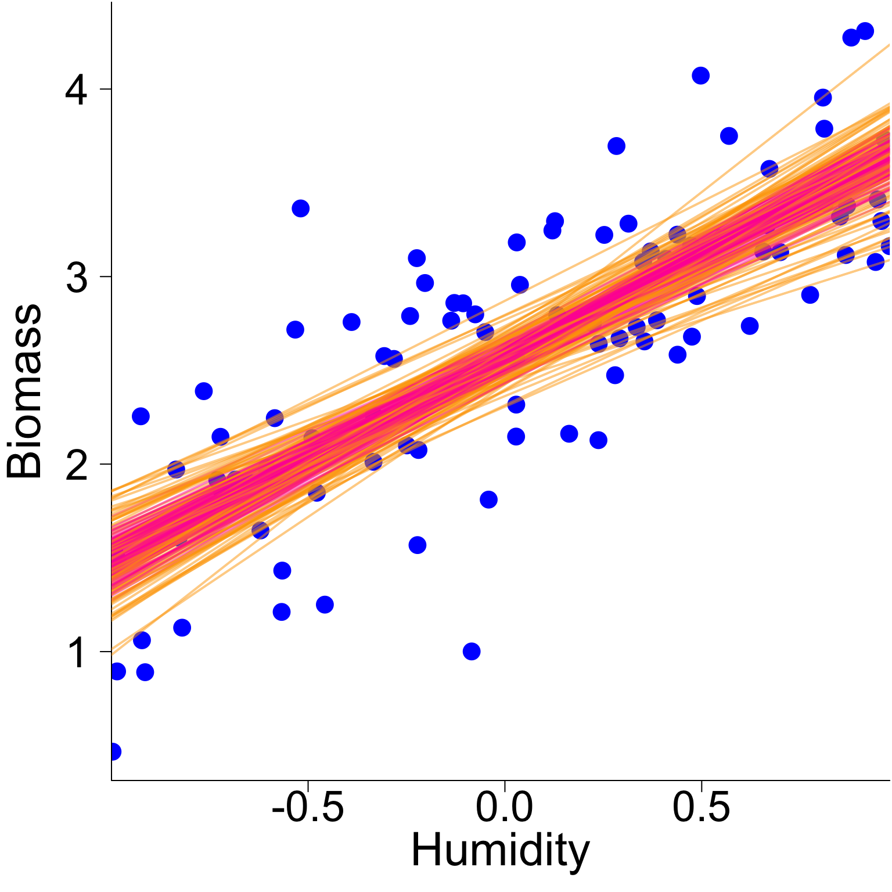
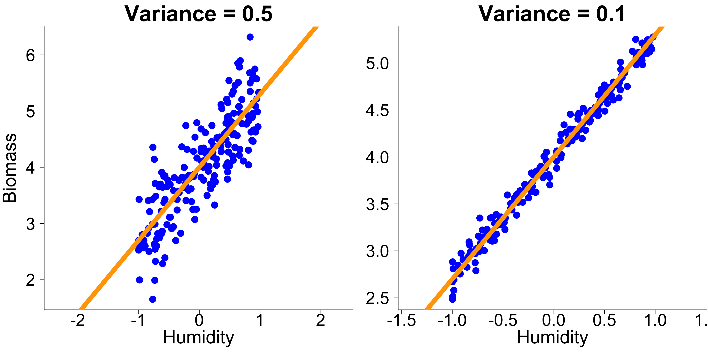

Linear models
2/10/23
Basic regression model
Hierarchical models are a generalized version of the classic regression models you have seen in your undergraduate courses.
In its simplest form, a regression model is usually presented as
\[ y_i = \beta_0 + \beta_1 x_{i} + \varepsilon \]
It is known as a simple linear model, where :
\(y_i\) is the value of a response variable for observation \(i\)
\(x_i\) is the value of an explanatory variable for observation \(i\)
\(\beta_0\) is the model intercept
\(\beta_1\) is the model slope
\(\varepsilon\) is the error term
Basic regression model
The cool thing about the simple linear model is that it can be studied visually quite easily
Estimating regression parameters
Many techniques have been proposed to estimate the parameters of a regression model.
The goal of this course is not to study these techniques but we will learn how to play with the estimated parameters because it will be very useful as we move along.
For example, if we want to build a model’s confidence interval from a linear regression coded as
How would you do it ?
Let’s look at the model’s results are worth studying
Estimating regression parameters
Model’s results
Call:
lm(formula = y ~ x)
Residuals:
Min 1Q Median 3Q Max
-1.47988 -0.26475 0.00611 0.32590 1.36077
Coefficients:
Estimate Std. Error t value Pr(>|t|)
(Intercept) 2.57389 0.04720 54.53 <2e-16 ***
x 1.10086 0.07976 13.80 <2e-16 ***
---
Signif. codes: 0 '***' 0.001 '**' 0.01 '*' 0.05 '.' 0.1 ' ' 1
Residual standard error: 0.4718 on 98 degrees of freedom
Multiple R-squared: 0.6603, Adjusted R-squared: 0.6569
F-statistic: 190.5 on 1 and 98 DF, p-value: < 2.2e-16Let’s say we want to construst the model’s confidence intervals by sampling multiple times (say 100 times!) the regression parameters, which we will assume follow Gaussian distribution. How would you do this ?
Estimating regression parameters
Sampling model parameters
We could sample the model parameters but how can we do this properly ?
Any suggestions?
Estimating regression parameters
Sampling model parameters
If we look at the estimated regression model coefficient, we can learn a few things
Estimate Std. Error t value Pr(>|t|)
(Intercept) 2.573889 0.04720304 54.52804 4.011925e-75
x 1.100865 0.07975800 13.80256 1.035796e-24Notably, there are uncertainty around the parameters.
Maybe we can use this information to sample model parameters and reconstruct models across different iterations of parameters.
Let’s give it a shot !
Estimating regression parameters
Sampling model parameters
If we assume that the parameters of our particular model follow a Gaussian distribution, we can state that
\[\beta_0 \sim N(2.574, 0.047^2)\] \[\beta_1 \sim N(1.101, 0.080^2)\]
Estimating regression parameters
Sampling model parameters
In R, we can do this as follow
Estimating regression parameters
Sampling model parameters
Estimating regression parameters
Sampling model parameters
But is this the right way to do it ?

Estimating regression parameters
Sampling model parameters
Actually, even if the model’s confidence interval look about right, they are wrong !

Estimating regression parameters
Sampling model parameters
The approach presented in the previous slide works only if we assume that the parameters are completely independent from one another.
A situation that happens only in very specific circumstances.
So… We need to find a way to account for the non-independencies between the parameters.
How can we do this ? Any ideas ?
Estimating regression parameters
Sampling model parameters
Assuming that the regression parameters are normally distributed is not a bad assumption.
However to consider a dependencies between the parameters we need to sample them from a multivariate normal distribution where the variance of each parameter and their dependency is defined by a covariance matrix estimated specifically for the data we model.
The good news is that this covariance matrix is given by summary.lm function
Estimating regression parameters
Sampling model parameters
For our specific model, mathematically, we assume that
\[\begin{bmatrix} \beta_0\\ \beta_1\\ \end{bmatrix} \sim MVN \left( \begin{bmatrix} 2.574\\ 1.101\\ \end{bmatrix}, \begin{bmatrix} 0.0100 & -0.0005 \\ -0.0005 & 0.0286 \\ \end{bmatrix} \right)\]
Note To present the multivariate normal distribution, we rely on matrix notation. This is our first introduction into matrix algebra. We will talk about this more into this course.
Estimating regression parameters
Sampling model parameters
In R, we can sample the parameters using a multivariate normal distribution using the following code
Estimating regression parameters
Sampling model parameters

Estimating regression parameters
Sampling model parameters - Comparison

stop
Can we do better
In R, we can do this as follow
# Object that include regression coefficients
regCoef <- summaryReg$coefficients
# Sample regression parameters
beta_0 <- rnorm(100, mean = regCoef[1,1], sd = regCoef[1,2])
beta_1 <- rnorm(100, mean = regCoef[2,1], sd = regCoef[2,2])
beta <- MASS::mvrnorm(100, regCoef[,1], Sigma = summaryReg$cov.unscaled)Estimating regression parameters
Sampling model parameters
Estimating regression parameters
Sampling model parameters
Can we do better
Estimating regression parameters
Sampling model parameters
Actually, what we show previously is wrong because
Basic regression model
There are however two major pitfalls in using the simple linear model for problems in the life sciences
- The simple linear model assumes that the error follows a Gaussian distribution… actually to be very precise, in the typical way we learn about simple linear regression models, it is common to disregard one parameter.
Any clue which one?
In the simple linear regression the error term (\(\varepsilon\)) has actually a very precise definition:
\[\varepsilon \sim N(0, \sigma^2)\] where \(\sigma^2\) is an estimated variance
In words, it means that the error in a simple linear regression follows a Gaussian distribution with a variance that is estimated.
Gaussian error

Basic regression model - Gaussian error
To go around this problem, generalized linear models (GLMs) have been proposed. In essence, GLMs use link functions to adapt models for them to be used on non-Gaussian data.
For example
logit link function :
log link function :
The logit link function is often used for modelling binary data while the log link function is commonly used for modelling count data.
Basic regression model
There are however a few major pitfall in using the simple linear model for problems in the life sciences
- One explanatory is almost never enough to answer the questions we want to aproach
second
Test your model
img:

it is a landscape
check with simulations
check with simulations
choose parameters
make up an X variable
calculate the average
simulate some observations
finally, visualize
here it is all on one slide
Or we can present the code and results separately
another equation
\[ 2 + 4 = 6 \]
The equation
\[ \begin{align} y &\sim \text{N}(\mu, \sigma_{obs}) \\ \mu &= a + bx \\ \end{align} \]
The model
Declare the data
State parameters
Write the likelihood and priors
data {
int<lower=0> N;
vector[N] y;
}
parameters {
real mu;
real<lower=0> sigma;
}
model {
y ~ normal(mu, sigma);
mu ~ normal(0, 1);
sigma ~ exponential(1);
}